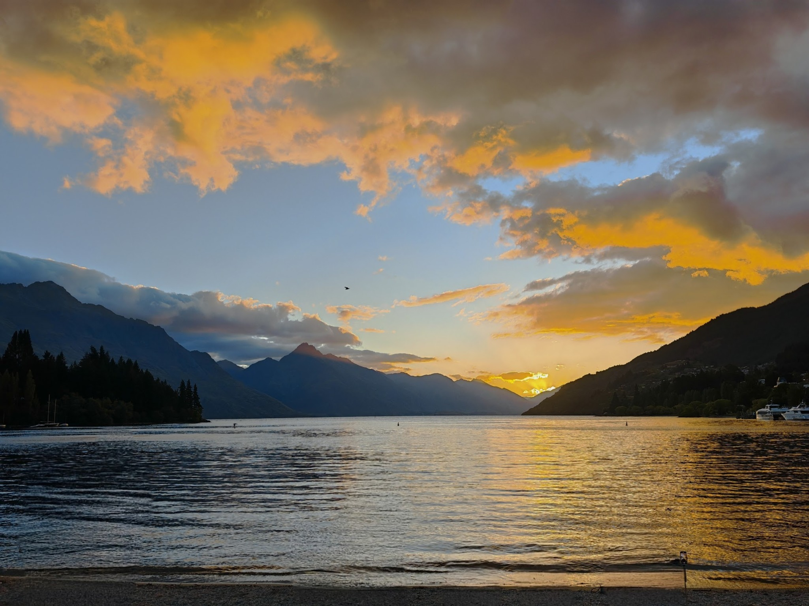

Hobby Journal
A Month in New Zealand: Quiet Holidays, Road Trip Rush, and a Taste of the South Island’s Wild Side
Logged on

We landed in Auckland on December 16, welcomed by warm early-summer sun and the familiar comfort of staying with family. Most of December was intentionally slow. Christmas was spent almost entirely at home. The kids ran around the living room, food was always on the table, and everyone slipped into that relaxed “holiday mode” that only happens when you’re surrounded by family you haven’t seen in a while.
We did explore of course, but in a very unhurried way. Parks, botanical gardens, beaches, waterfalls, Mount Eden are classic North Island staples that you don’t need to rush. One morning we even went strawberry picking, which somehow made the kids more excited than any tourist attraction we saw the whole month.
New Year’s Eve was a shift from the quiet routines. We headed to the CBD for the Sky Tower countdown, expecting a big show. The fireworks display, well, it wasn’t exactly Manila standards. There was no booming barangay-level chaos, no citywide lightshow, none of the insanity we grew up with. But even if it was underwhelming, it was still a different kind of nice. It was calmer, a little colder, and something you only really appreciate by being there.
By January, the itch to roam hit hard. We packed up and flew to the South Island for a week, which, in hindsight, was nowhere near enough. Limited time forces you to choose, and we chose right.
South Island: A Week of Cold Mornings, Wild Landscapes, and One Unforgettable Sky
The moment we stepped outside the airport, the temperature slapped us awake. Single-digit cold for the first time was a novelty for someone used to living in the tropics. Suddenly jackets weren’t fashion pieces, they were survival equipment.
Our route took us around some of the best scenery in the South Island:
- Queenstown: Beautiful, crowded, and priced like it knows it. Still worth seeing once, especially with the mountains wrapping around the lake like a painting.
- Aoraki / Mount Cook: The five-hour drive from Queenstown was absolutely worth it. The dramatic shifts in landscape and the beautiful route to Mount Cook are stunning. You won't get bored driving, and the mountain itself is famous for being the default Windows 8 lockscreen—a road I ended up driving down 13 years after first seeing the image. Fate is a funny thing.
- Arrowtown: Quiet, charming and almost too picturesque. The kind of place where time moves slower.
- Glenorchy & Paradise: The drive alone is enough reason to go. Clear blue water, dramatic mountains, and long stretches of empty road. It feels like Middle-earth without trying.
- Deer Park Heights: Easily one of the underrated gems. Driving up gives you sweeping views of Queenstown, The Remarkables, and Lake Wakatipu. No crowds, no rush, just you and the wind.
- Ben Ohau Area (Airbnb stay): The unexpected highlight. One night in complete darkness, with no light pollution at all. The kind of blackout that makes you look up by instinct.
And that’s when the sky paid us back. We caught the Aurora Australis. Seeing the Southern Lights wasn’t planned, expected, or even on the itinerary. It just happened. And moments like that remind you why travel is worth the effort, the cold, and the long drives with restless kids.
What We Learned & What We Want Next
North Island gave us slow days, family time, and small adventures without pressure. But we barely scratched the surface. Next time we want to explore more: Coromandel, Rotorua, Hobbiton, Taupo, the rest of Auckland beyond the suburbs.
The South Island, on the other hand, was a shock of beauty delivered in fast-forward. If we go back, we’d dedicate more time, maybe two full weeks, and stay longer in fewer places instead of squeezing everything into one loop.
A month sounds long on paper, but travel always has a way of shrinking time. What sticks the most are the contrasts: warm December versus icy January, quiet family days versus alpine drives, city fireworks versus auroras in silence.
New Zealand gave us all of that, and somehow still left us wanting more.